Page 1 / 原始页码 35
第 3 章 生命的化学基石
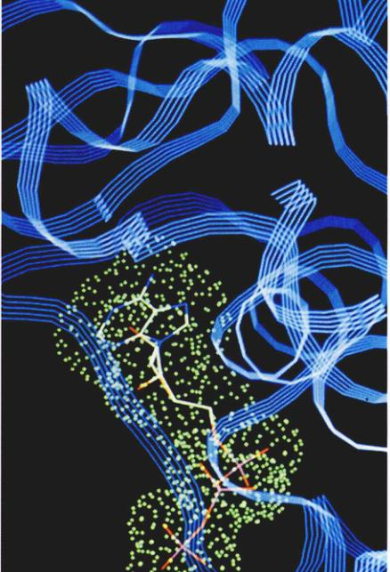
图 3.1 计算机绘制的大分子模型 图中是一个酶分子，它参与糖代谢产产能的过程。这个复杂的分子是由几百个氨基酸连接而成的，最终形成了如图所示的典型的卷曲和折叠。
和我们周围的世界相比，分子太小了。想像一下：杯中水分子的数量比天上的星星还多。与水分子相比，很多由成千上万个原子所组成的分子算得上巨大了。这些原子结合成许多小分子，小分子再连成长链（图 3.1）。这些巨大的分子几乎都由有机体合成，又称大分子。我们将会在看到有4种基本的大分子，它们是构成所有有机体的基本单位。
Page 2 / 原始页码 36
3.1 生物体由分子构成
3.1.1 碳化学
我们在第2章讨论了原子是怎样结合成分子的。在这一章我们主要讨论有机分子 (organic molecule)，即含碳的化合物。碳原子之间，以及碳原子与氢、氧、氮、硫原子之间的连接，形成了生物分子的主要骨架。由于碳原子有4个价电子，即可形成4个共价键，所以碳的分子可以形成直链、支链乃至环。可以想像，所有这些可能性产生了多样的分子结构和构型。
只含有碳氢元素的分子叫烃 (hydrocarbon)。碳氢键是高能键，我们的主要能源化石燃料，就是烃分子化合物，比如丙烷 (C₃H₈) 是含有 8 个氢原子的三碳烃。
由于碳氢键蕴藏着相当大的能量，烃是一种很好的燃料。例如汽油就富含烃。
1) 官能团
碳氢原子有相近的电负性，故在 C—C、C—H 键中两个原子间的电子云几乎是均匀的，所以分子表面没有明显的电荷差别。基于这个原因，烃是非极性的。细胞合成的很多分子都包含有其他原子，由于这些原子有不同的电负性，含有它们的分子就带有局部的正电荷或负电荷，同时也就有了极性。这些分子可以理解为由特殊原子团，即官能团 (functional group) 进攻 C—H 键的产物。比如一个氢原子与一个氧原子结合，形成了被称作羟基 (—OH) 的官能团。
无论官能团在哪里，它们都可以保持某些固有的化学性质。由于氧原子有很大的电负性，可以吸引电子（如我们在第2章所见），所以羟基总是极性的。图 3.2 展示了羟基和其他一些对生物有重要意义的官能团。大多数与生物有关的化学反应都与官能团在分子间转移有关，在反应过程中，官能团总是作为一个整体参与。
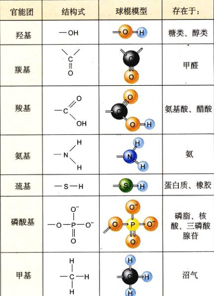
图 3.2 主要的官能团 这些基团倾向于作为一个整体参与化学反应，并且赋予了包含这些基团的分子特定的化学性质。比如氨基使分子碱性增强，而羧基使其酸性增强。
2) 生物大分子
生物体内的一些分子小而简单，只包含一个或几个官能团，而其他分子则大而复杂，称为大分子 (macromolecule)。多数情况下，这些大分子是由大量彼此相似的小分子组成的聚合物，就像很多车厢连成火车一样。举例来说，像淀粉 (starch) 那样复杂的糖类，是由许多简单的环状单糖聚合而成；蛋白质 (protein) 是氨基酸 (amino acid) 的聚合体；核酸 (nucleic acid) (DNA 和 RNA) 是由核苷酸 (nucleotide) 聚合而成的。习惯上将生物大分子分为4大类：蛋白质、核酸、脂类* (lipid) 和糖类 (carbohydrate)（表 3.1）。(* 此处及本书其他地方所提到的脂类是生物小分子，而非大分子。校者注)
3) 大分子的构建
虽然4种大分子是由不同的亚基 (subunit) 构成，但它们都以同一基本方式结合：一个亚基脱去—OH，另一个脱去—H，从而在二者之间形成共价键（图 3.3）。因为在形成新分子的过程中脱去的—OH 和 —H 等于脱去了一个水，这种缩合反应被称为脱水合成反应 (dehydration synthesis)。大分子每增加一个亚基，就脱去一分子的水。由于在脱水过程中破坏化学键要消耗能量，细胞必须为合成大分子化合物提供能量，包括水合反应在内的很多化学反应都需要将反应分子拉近并置于合适的空间位置，以便正确的化学键受力并断裂。上述定位和应力的过程称作催化，在细胞内这是由一类被称为酶的特殊蛋白质完成的。
Page 3 / 原始页码 37
表 3.1 大分子
| 大分子 |
亚 基 |
功 能 |
举 例 |
| 蛋白质 |
|
|
|
| 球蛋白 |
氨基酸 |
催化、转运 |
血红蛋白 |
| 结构蛋白 |
氨基酸 |
支持 |
毛发、蚕丝 |
| 核酸 |
|
|
|
| DNA |
脱氧核糖核苷酸 |
编码基因 |
染色体 |
| RNA |
核糖核苷酸 |
基因表达 |
信使 RNA |
| 脂类 |
|
|
|
| 脂肪 |
甘油和 3 个脂肪酸 |
储存能量 |
黄油、玉米油、肥皂 |
| 磷脂 |
甘油、2 个脂肪酸，磷酸基和极性的 R 基团 |
细胞膜 |
卵磷脂 |
| 前列腺素 |
含有两个非极性侧链的五碳环 |
化学信使 |
前列腺素 E (PGE) |
| 类固醇 |
4 个结合的碳环 |
激素、膜 |
胆固醇、雌激素 |
| 萜 |
长碳链 |
色素、结构成分 |
胡萝卜素、橡胶 |
| 糖类 |
|
|
|
| 淀粉、糖原 |
葡萄糖 |
储存能量 |
土豆 |
| 纤维素 |
葡萄糖 |
细胞壁 |
纸和芹菜的纤维 |
| 壳多糖 |
修饰过的葡萄糖 |
支持结构 |
螃蟹壳 |
通过一个与脱水合成反应完全相反的过程——加入而不是脱去一分子的水，细胞把大分子化合物分解成单体（图 3.3b），在这个被称为水解反应 (hydrolysis，希腊语中 hydro 是水的意思，lyse 即解体) 的过程中，氢原子被加到一个亚基上，羟基被加到另一亚基上，从而破坏了大分子中连接它们的共价键，原先储存在共价键中的能量随着键的破坏而释放出来。
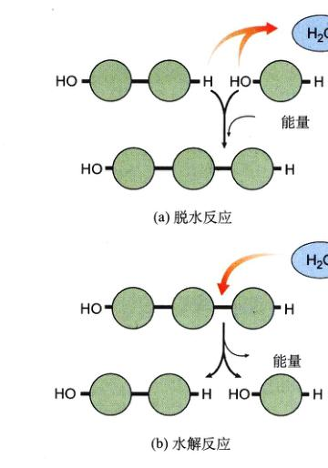
图 3.3 大分子的生成和解体 (a) 生物大分子是由亚基连接而成的聚合物。大分子中每个残基之间的共价键是通过脱水聚合反应形成的，这个反应需要能量，同时还产生了一分子的水。(b) 破坏残基之间的共价键需要加上一分子的水，这一水解过程同时释放了能量。
3.2 细胞的化学功能由蛋白质实现
3.2.1 蛋白质有多种功能
我们的讨论将从蛋白质这一构成生物体的大分子开始（见表 3.1），有机体内的蛋白质从结构到功能都有很大差异（表 3.2 及图 3.4）。
(1) 酶的催化作用：我们已经接触过一类蛋白质——酶。酶作为生物催化剂，在生物体内催化特定的反应。正因为如此，酶的出现是生物进化中一个重要的里程碑。酶多是球蛋白，它的三维构象与被催化的化学物质十分吻合，依靠作用于特殊的化学键使反应易于进行。
Page 4 / 原始页码 38
表 3.2 蛋白质的多种功能
| 功 能 |
蛋白质的种类 |
实 例 |
作 用 |
| 新陈代谢（催化） |
酶 |
水解酶
蛋白酶
聚合酶
激酶 |
水解多糖
分解蛋白质
合成核酸
使糖和蛋白质磷酸化 |
| 防御 |
免疫球蛋白
毒素 |
抗体
蛇毒 |
标记待清除的蛋白质
阻断神经功能 |
| 细胞识别 |
细胞表面抗原 |
主要组织相容性复合体蛋白 (MHC) |
自体识别 |
| 体内运输 |
球蛋白 |
血红蛋白
肌红蛋白
细胞色素 |
在血液中运输氧气和二氧化碳
在肌肉中运输氧气和二氧化碳
电子传递 |
| 跨膜运输 |
转运蛋白 |
钠钾泵
质子泵
阴离子通道 |
维持膜可兴奋状态
化学渗透
运输氯离子 |
| 支持结构 |
纤维 |
胶原蛋白
角蛋白
血纤维蛋白 |
软骨
毛发、指甲
血凝块 |
| 运动 |
肌肉 |
肌动蛋白
肌球蛋白 |
肌纤维收缩
肌纤维收缩 |
| 调节渗透压 |
白蛋白 |
血清白蛋白 |
保持血液渗透压 |
| 基因调控 |
阻遏蛋白 |
lac 阻遏蛋白 |
调控转录 |
| 调节机体功能 |
激素 |
胰岛素
加压素
催产素 |
调节血糖水平
增加肾的保水能力
调节子宫收缩及母乳的分泌 |
| 储藏 |
结合离子 |
铁蛋白
酪蛋白
钙调蛋白 |
储藏铁，特别是在脾脏内
在乳汁中储藏离子
结合钙离子 |
(2) 防御：另一些球蛋白利用自己的形状“识别”外来的微生物和癌细胞，这些细胞表面的受体形成了机体内分泌和免疫系统的核心。
(3) 转运：有一类球蛋白可以运输特定的小分子或离子。比如血红蛋白在血液中运输氧气；与其相似的肌红蛋白在肌肉中运送氧气；铁在血液中靠转铁蛋白 (transferrin) 运输。
(4) 支持：纤维蛋白 (fibrous protein) 起结构作用。这些结构蛋白包括头发里的角蛋白 (keratin)，凝血块中的血纤维蛋白 (fibrin) 以及构成皮肤、骨骼、肌腱和韧带基质的胶原蛋白 (collagen)，胶原是脊椎动物体内含量最丰富的蛋白。
(5) 运动：肌肉的收缩是依靠两种丝状蛋白，即肌动蛋白和肌球蛋白的相对滑动而实现的。收缩蛋白 (contractile protein) 在构成细胞骨架和胞内物质运输中也起到重要作用。
(6) 调控：在动物体内，一些被称作激素的小分子扮演着胞间信使 (intercellular messenger) 的角色。在细胞内，蛋白质也起着各种各样的调控作用，比如在发育过程中激活或关闭某些基因，另外蛋白脂也是信息的接受者，在细胞膜表面充当受体。
Page 5 / 原始页码 39
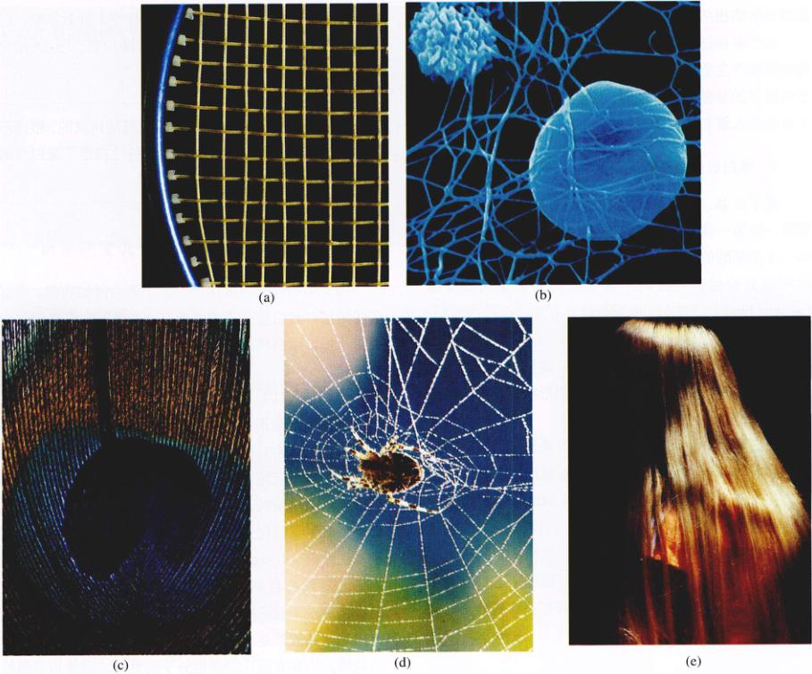
图 3.4 一些较常见的结构蛋白 (a) 胶原蛋白：网球拍上的纤维，从肌腱组织中获得；(b) 血纤维蛋白：血凝块的扫描电子显微镜照片 (3 000 倍)；(c) 角蛋白：孔雀的羽毛；(d) 丝：蛛网；(e) 角蛋白：人的头发。
3.2.2 氨基酸是构成蛋白质的基本单位
虽然蛋白质是复杂而又多变的大分子，它们却都是由20种氨基酸按照特定顺序排列构成的。很多科学家认为氨基酸是地球上最早出现的几种有机分子之一，地球早期的海洋极有可能含有多种多样的氨基酸。
1) 氨基酸的结构
氨基酸分子含有一个氨基 (—NH₂)，一个羧基 (—COOH) 和一个氢原子，它们都与一个中心碳原子相连。
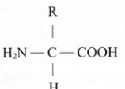
每个氨基酸特有的化学性质则是由它侧链（用 R 表示）的化学性质决定的，侧链也与中心碳原子相连。例如，当侧链是 —CH₂OH 时，这种氨基酸（丝氨酸）具有极性，而当侧链是 —CH₃ 时，这种氨基酸（丙氨酸）就是非极性的。基于侧链的差别，20 种常见的氨基酸被划分为5类：
- (1) 非极性氨基酸：R 基通常含有 —CH₂ 或 —CH₃，例如亮氨酸。
- (2) 极性不带电荷氨基酸：R 基含有氧或仅仅含有氮，如苏氨酸。
- (3) 带电荷的氨基酸：R 基含有酸或碱，如谷氨酸。
- (4) 芳香族氨基酸：R 基含有一个有机（碳）环，环上的原子由间隔的单、双键逐次相连，例如苯丙氨酸。
- (5) 具有特殊功能的氨基酸：有其独特的化学性质，如甲硫氨酸通常在氨基酸链的首位，脯氨酸常造成氨基酸长链的扭曲，而半胱氨酸将链相连。
由于其侧链化学性质的不同，每一种氨基酸对蛋白质的形状产生不同的影响。例如，当蛋白质的某一部分含有较多的非极性氨基酸时，它们由于疏水作用而倾向于折叠进入蛋白质内部。
Page 6 / 原始页码 40
基酸序列都相同。尽管在自然界中有许多种氨基酸，但是蛋白质仅仅由20种常见的氨基酸构成。图 3.6 描绘了这 20 种氨基酸及其侧链。
2) 蛋白质是氨基酸的聚合体
除了 R 基，当氨基酸电离时，它的一端是带正电的氨基，另一端是带负电的羧基。一个氨基酸的氨基和另一个氨基酸的羧基会发生聚合反应，失去一分子的水而形成共价键。连接两个氨基酸的共价键叫做肽键 (peptide bond)（图 3.5）。由于肽键具有部分双键的性质，因此两端的氨基酸不能够绕着 N—C 键自由旋转，而与中心碳原子相连的 N—C 和 C—C 键则不同。氨基酸链之所以能够形成螺旋或其他规则的形状，其中一个原因就是肽键具有刚性。
蛋白质 (protein) 是由一条或多条长链，或称多肽链 (polypeptide) 构成。肽链是氨基酸通过肽键连接而成的。在弗雷德里克·桑格 (Frederick Sanger) 于 20 世纪 50 年代开展的早期开创性的工作之后，人们才了解到每种蛋白质都有其特定的氨基酸序列。桑格成功地确定了胰岛素 (insulin) 的氨基酸序列，从而确证了这种蛋白质具有特定的氨基酸序列——溶液中所有胰岛素分子的氨基酸序列都是确定的。
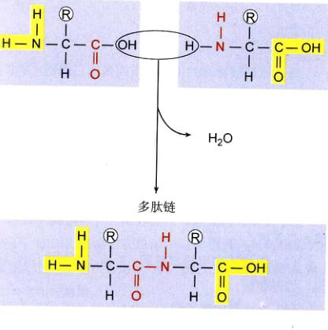
图 3.5 肽键 一个氨基酸分子的 —NH₂ 末端和另一个氨基酸分子的 —COOH 末端相连形成肽键。由于肽键具有部分双键的性质，所以不能绕轴自由旋转。
3.2.3 蛋白质的功能取决于其空间结构
由于蛋白质的空间结构决定了蛋白质的功能，所以空间结构对蛋白质有重要的意义。如果我们将肽链比作芦苇，那蛋白质就是由它编织成的篮子。
1) 蛋白质结构简介
折叠成复杂形状的肽链构成了蛋白质。我们从何得知它的空间结构？研究像蛋白质这么小的物体，一个主要的方法是用极短波长的光（X 射线）来“看”。X 射线衍射是一个精细的过程，它使得研究者能够建立一个包含每个原子空间位置的三维图像。这种方法最先被应用于是肌红蛋白 (myoglobin) 的分析，接着是血红蛋白。随着研究对象的名单越来越长，人们发现了一个普遍原则：在每一个被研究的蛋白质中，基本上所有在蛋白质内部的氨基酸都是非极性的，比如亮氨酸、缬氨酸和苯丙氨酸。水具有排斥非极性分子的性质，这使得非极性的氨基酸被排挤到蛋白质内部，而这些非极性氨基酸彼此间紧密结合，使得富余的空间很小。除了少数起着重要作用的氨基酸外，极性以及带电的氨基酸仅仅局限于蛋白质表面。
2) 蛋白质的结构层次
习惯上将蛋白质的结构分为四级，即一级 (primary)、二级 (secondary)、三级 (tertiary) 和四级 (quaternary) 结构（图 3.7）。随着我们对蛋白质结构认识的深入，分子生物学家又提出了两个新的层次：基元 (motif) 和结构域 (domain)。由于后二者在以后的章节中十分重要，我们也在此予以介绍。
(1) 一级结构：蛋白质特定的氨基酸序列就是其一级结构。这个序列是由编码这个蛋白的核苷酸序列决定的。将不同氨基酸区分开来的 R 基对肽链的连接却没有直接的影响，所以蛋白质可以由任意排列的氨基酸构成。这样含有 100 个氨基酸的蛋白质，可以有 20¹⁰⁰ 种不同的氨基酸排列（相当于 10¹³⁰，即 1 后加 130 个 0，这比已知的整个宇宙的原子数还多）。这是蛋白质的一个重要性。
Page 7 / 原始页码 41
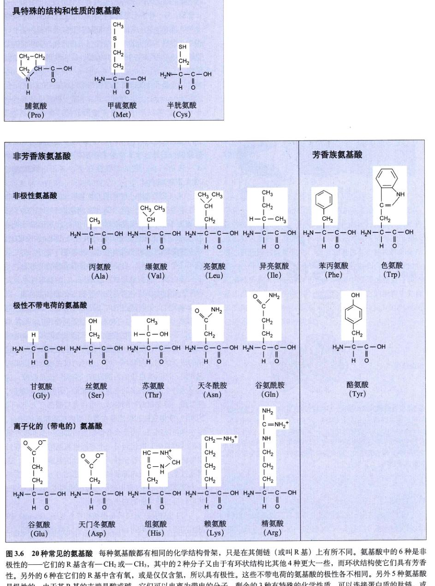
图 3.6 20 种常见的氨基酸 每种氨基酸都有相同的化学结构骨架，只是在其侧链（或叫 R 基）上有所不同。氨基酸中的 6 种是非极性的——它们的 R 基含有 —CH₂ 或 —CH₃，其中的 2 种分子又由于有环状结构比其他 4 种更大一些，而环状结构使它们具有芳香性。另外的 6 种在它们的 R 基中含有氧，或是仅仅含氮，所以具有极性。这些不带电荷的极性氨基酸的各不相同。另外 5 种氨基酸是极性的，由于其 R 基的末端是酸或碱，它们可以电离为带电的分子。剩余的 3 种有特殊的化学性质，可以连接蛋白质的肽链，或是蛋白质链的扭曲。
Page 8 / 原始页码 42
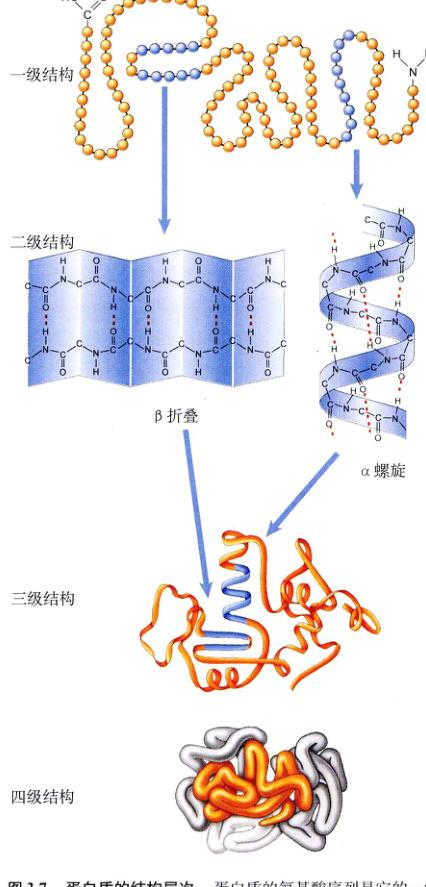
图 3.7 蛋白质的结构层次 蛋白质的氨基酸序列是它的一级结构。相邻的氨基酸间形成氢键，产生了褶皱——β 折叠 (β-pleated sheet)，以及旋绕的结构——α 螺旋 (α-helix)。这些螺旋和折叠形成了蛋白质的二级结构。球状蛋白自身的卷曲形成了空间结构，即三级结构。许多蛋白质聚集在一起，这种聚合就叫做四级结构。
质，它使得蛋白质具有极大的多样性。
(2) 二级结构：在蛋白质中并非只有氨基酸的侧链可以形成氢键，主链的 —COOH 和 —NH₂ 基团也可以形成紧密的氢键，紧密到它们与水的相互作用超过了非极性基团进入蛋白质内部的趋势，因此它们可以排斥内部的非极性基团。用 X 射线衍射观察蛋白质的结构揭示了其中的原因——主链上的极性部分之间形成了氢键！有两种氢键结合方式，一种是在一条链上相隔一定距离的两个氨基酸之间形成氢键，这使得肽链形成一个卷曲——α 螺旋；另一种情况是氢键在两条链之间形成，将一条链上的氨基酸与另一条链上的氨基酸相连，通常很多链平行相连，形成了起伏的片状结构——β 折叠。氨基酸依靠氢键形成这种特殊的螺旋和折叠，就叫做蛋白质的二级结构。
(3) 基元：蛋白质二级结构可以以特定的方式结合成基元 (motif)，也叫做超二级结构。一种常见的基元是 βαβ，它可以形成折叠，如所称的“罗斯曼折叠” (Rossmann fold)，位于很多蛋白质与核酸结合部位的中心，其结构就是 βαβαβ；另一种普遍存在的基元叫做 β 折叠桶，它是一个 β 折叠卷曲成圆筒状，第三种基元是 α-转角-α，它的重要性在于许多蛋白质靠它与 DNA 双链结合。
(4) 三级结构：在确定了各个基元的位置，并将非极性基团折叠入蛋白质内部之后，球蛋白最终形成了它的三级结构。蛋白质与水的疏水作用形成三级结构的。蛋白质的最终折叠方式是由它的一级结构决定的，即由它侧链的化学性质决定的。很多蛋白质可以在完全解开（变性）之后，自动恢复折叠形成最初的形态。
蛋白质一旦折叠形成三级结构，它的稳定性在很大程度上受到内部结合紧密性的影响。在蛋白质内部，当两条非极性的链靠得很近时，链间形成了一种称作范德华力 (van der Waals' force) 的分子间作用力。虽然单个的范德华力很弱，但当很多的范德华力累加起来时就形成了很强的作用力，就像在维可牢尼龙搭扣上结合起来的成百的钩子与套环一样，这种力仅在很近的距离内起作用，所以蛋白质的内部没有“空洞”或是裂隙，这也是为什么有那么多的非极性氨基酸（丙氨酸、缬氨酸、亮氨酸、异亮氨酸）的缘故。每种氨基酸都有大小不同的侧链，使得这些非极性链在蛋白质内部能精确的结合。现在你可以明白，为什么将蛋白质内部的一个非极性氨基酸（丙氨酸）取而代为另一个非极性氨基酸（亮氨酸），常常破坏蛋白质的稳定性。亮氨酸比丙氨酸大得多，这就扰乱了蛋白质内部肽链间的精密结合方式，哪怕是一个氨基酸的改变，也可能引起蛋白质构型的巨大变化，并导致蛋白质功能的丧失或改变。
(5) 结构域：蛋白质是由被称为外显子 (exons) 的基因功能片断编码的（外显子将在第15章详细讨论）。每个外显子所编码的蛋白片段，通常有 100~200 个氨基酸，折叠成一个结构上独立的对立单位——结构域 (domain)。随着肽链的折叠，结构域也形成了它们特定的构形，结构域之间存在着或多或少的独立性。如果人为地制造一些在天然蛋白质中可以形成结构域的片段，就
Page 9 / 原始页码 43
会发现它们也能像在完整的蛋白质中一样形成相同的结构，这就证明了结构域的独立性。
蛋白质中的不同结构域是由单条肽链连接的，就像用绳子把临近的节连接起来。通常蛋白质中不同的结构域有着不同的功能，比如酶中的一个结构域结合辅助因子 (cofactor)，而另一个结合底物 (substrate)。
(6) 四级结构：当两个或更多的肽链结合成一个有功能的蛋白质时，每一条肽链叫做蛋白质的一个亚基。亚基不一定相同，例如血红蛋白由两个 α 链亚基和两个 β 链亚基构成。蛋白质亚基间的结合方式叫做四级结构。在含有亚基的蛋白质中，亚基间的接触面通常是非极性的，这对在亚基之间传递有关单个亚基活性的信息有着重要的作用。
肽链中任何一个氨基酸发生改变，都会对结构和功能产生很大的影响。镰刀型红细胞血红蛋白就是其 β 亚基转角处的一个氨基酸被替换，由极性的谷氨酸变为非极性的缬氨酸，这样，在蛋白质表面出现了一个非极性氨基酸产生的“黏性区域”，使得血红蛋白分子间相互粘连，最终形成了没有生理功能的链状结构，并导致遗传性的镰刀型红细胞的形成。
3.2.4 蛋白质是如何折叠成具有活性的构象的
蛋白质是如何形成特定的构象的？非极性的氨基酸起了重要的作用。不久前，研究人员还认为新合成的蛋白质的自动折叠是因为疏水作用，它迫使非极性的氨基酸进入蛋白质的内部，现在我们开始以新种观点认识肤浅。蛋白质可以非常多的方式折叠，以至于尝试和纠正错误折叠会耗费大量的时间。另外，在展开的肽链折叠形成最终结构的过程中，应当出现在蛋白质内部的非极性“黏性”部分，会在中间步骤中暴露在表面，如果把这些中间产物放入试管中，它们会形成一种我们不需要的糊状物质。
1) 伴侣蛋白
细胞如何避免这种情况的出现？对大肠杆菌的一种罕见突变株的研究为上述问题的解决提供了重要线索。这种突变造成病毒（即噬菌体。校者注）无法在大肠杆菌细胞内复制，其原因是噬菌体的蛋白质无法正常折叠。进一步的研究表明，普通细胞含有一种特殊的蛋白质——伴侣蛋白 (chaperonin)，它帮助新合成的蛋白质正确地折叠（图 3.8）。当大肠杆菌中编码这种蛋白质的基因发生突变而失活时，细菌会死之。它的细胞中充满了聚集集团的错误折叠起来的蛋白质，总共有 30% 的蛋白质不能形成正确的构象。
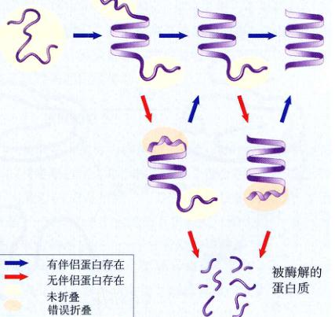
图 3.8 现有的关于蛋白质折叠的模型 新合成的蛋白质迅速地折叠成含有特定的 α 螺旋和 β 折叠的基元，但这些结构元素仅仅是大致地排列成一种伸展的构形。接下来的折叠过程由于错误和纠漏的发生，发展缓慢。这个过程是在伴侣蛋白的帮助下进行的，它可以识别错误折叠的蛋白质，并将它们解开，给它们又一次形成正确折叠的机会。最终，如果蛋白质没能形成正确的折叠，它将被蛋白酶分解。
Page 10 / 原始页码 44
分子生物学家已经确定了 17 种以上的分子伴侣蛋白质，很多是热休克蛋白，它们在高温刺激时大量表达，高温使得细胞里的多肽去折叠，伴侣蛋白帮助它们重新折叠。
关于伴侣蛋白如何起作用，存在很大的争议。最初人们认为它提供了一个保护性的环境，使蛋白质的折叠不受其他蛋白质的阻碍，现在看来，更有可能是伴侣蛋白使错误折叠的蛋白质复原，又给了它另一次正确折叠的机会。当研究人员将伴侣蛋白加入一种被称为地错误折叠的蛋白质——苹果酸脱氢酶 (malate dehydrogenase) 中时，这个蛋白质被恢复，重新折叠形成了有活性的结构。
2) 蛋白质折叠相关的疾病
有一种颇能吸引人的观点认为，某些疾病是由于不能促使某些关键的蛋白质进行复杂的折叠而引起的，而伴侣蛋白的失活是一个重要原因。囊性纤维化 (cystic fibrosis) 是一种遗传病，病因是一个突变导致一种在离子跨膜运输中起关键作用的蛋白质失活。至少在某些病例中，这种蛋白质具有正确的氨基酸序列，但是不能形成合适的最终构象。伴侣蛋白的失活，可能引起蛋白质在脑细胞中的凝集，从而产生老年性痴呆 (Alzheimer's disease) 所特有的症状——淀粉样斑。
3.2.5 蛋白质是如何去折叠的
当蛋白质所处的环境改变时，它有可能改变构象乃至去折叠，这个过程叫做变性 (denaturation)。周围环境中 pH 值、温度或离子浓度的变化都可以引起蛋白质的变性。蛋白质变性后通常都失去生物学活性，对酶来说这种现象特别明显。由于生物体内的化学反应都是由酶催化的，保持酶的活性十分重要。这就是在冰箱发明以前，民间用腌制的方法保存食物的原理——把食物置于高浓度的盐或者醋的溶液中，使微生物的酶变性，从而抑制它们的生长。
很多酶仅在一个很小的环境参数范围内保持其生理功能。在体内不断流动的血液中的酶，通常在体内 pH 值为 7.4 的条件下具有活性，而在胃内的强酸环境中会很快失活；另一方面，胃内分解蛋白质的酶通常在 pH 值为 2 或低于 2 的环境中起作用，它在血液的碱性环境中会很快失活；同样在海底热泉附近生存的有机体，它们的酶在这种极端的环境下（高于 100°C）能够很好地发挥功能，而在低温时失活，故而它们无法在凉水中生存。任何生物对环境 pH 值、温度和盐浓度都有一个“承受范围”，在这一范围内，酶可以保持适当的结构来完成它的生理功能。
当正常的环境恢复后，变性的小蛋白质可能自动重新折叠成天然的构象，动力来源于其氨基酸的非极性基团与水的相互作用（图 3.9）。大一些的蛋白质，由于其复杂的折叠，很难自动恢复原先的结构。区分变性和解离 (dissociation) 是很重要的。血红蛋白的 4 个亚基（图 3.10）可以在不变性的情况下解离成 4 个分子（两个 α 球蛋白和两个 β 球蛋白），并可以迅速恢复四级结构。
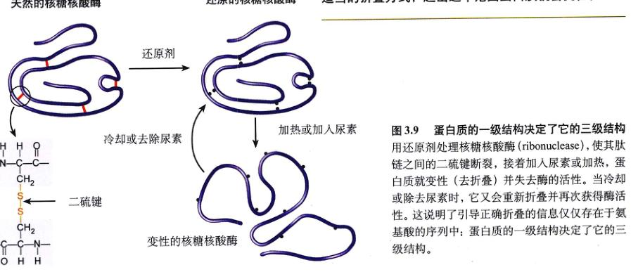
图 3.9 蛋白质的一级结构决定了它的三级结构 用还原剂处理核糖核酸酶 (ribonuclease)，使其肽链之间的二硫键断裂，接着加入尿素或加热，蛋白质就变性（去折叠）并失去酶的活性。当冷却或除去尿素时，它又会重新折叠并再次获得酶活性。这说明了引导正确折叠的信息仅仅存在于氨基酸的序列中：蛋白质的一级结构决定了它的三级结构。
Page 11 / 原始页码 45

图 3.10 血红蛋白的 4 个亚基 血红蛋白分子由 4 个球状亚基组成，亚基也被称为多肽链。下方的两个 α 链，叫做 α 球蛋白，用粉红色表示；上方的两个 β 链，叫做 β 球蛋白，用蓝色表示。
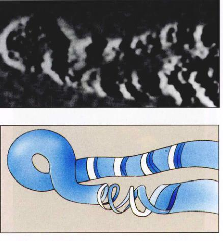
图 3.11 DNA 分子的第一张照片 这张显微图片显示了一段放大子百万倍的 DNA 分子，下图是它的草图。这个分子非常纤细，50 000 个分子仅相当于一个头发丝的直径。
3.3 核酸储存并传递遗传信息
3.3.1 信息分子
细胞的生物活性依赖于大量蛋白质的合成，每种蛋白质都有一个特定的序列，产生正确蛋白质的能力代代遗传，而蛋白质本身却不直接遗传给下一代。
核酸是细胞储存遗传信息的载体，就像磁盘和磁带储存了计算机所需的信息、蓝图储存了建筑者所需的信息、交通地图储存了旅游者所需的信息一样。有两种核酸：脱氧核糖核酸 (deoxyribonucleic acid) (DNA，图 3.11) 和核糖核酸 (RNA)。DNA 编码用于合成蛋白质信息的方式就好象字母在纸上记录信息一样（见第14章），在细胞中，核酸有其独一无二的性质。它可以作为母板产生与自己完全相同的拷贝，决定某个物种有特有性质的遗传信息，此此可以复制并遗传给后代。基于这个原因，DNA 常常被称作遗传物质。细胞用另一种核酸 (RNA) 从 DNA 的编码中读取信息，并指导蛋白质的合成。RNA 在结构上与 DNA 有很多相似之处，它是由于 DNA 的特定部分转录而来，并将遗传信息运送到细胞的各个部分，作为确定蛋白质氨基酸序列的蓝本。我们将会在第15章详细讨论这个问题。
1) “观察” DNA
光学显微镜不能分辨小于 1000 个原子直径的长度，因此它看不到 DNA 分子，电子显微镜可以对几十个原子成像，但还不能分辨 DNA 长链的每一个原子，这个极限直到近 10 年才被扫描隧道显微镜 (scanning-tunneling microscope) 的引人所打破（图 3.12）。
这些显微镜是如何工作的？设想你坐在一个有一把椅子的黑屋中，为了确定椅子的形状，你可以用手电筒来照射它，光在椅子上反射并在你的眼中成像，这就是光学显微镜和电子显微镜的工作原理，只是后者的“手电筒”射出的不是光而是电子束。你也可以伸手触摸椅子表面来得知其形状，实际上你可以把一个探针（手）放在椅子表面附近，来测量离开表面的距离。在扫描隧道显微镜中，计算机操纵一根探针在分子表面以不足 1 个原子直径的间距而移动。
2) 核酸的结构
核酸是由被称为核苷酸 (nucleotide) 的重复单位形成的长链聚合物。每个核苷酸由 3 部分组成：一个五碳环（在 RNA 内是核糖，在 DNA 内是脱氧核糖）；一个磷酸基 (—PO₄)；一个含氮的有机碱基（图 3.13）。当核苷酸的聚合物形成时，一个核苷酸的磷酸基与另一个的羟基结合生成一个磷酸二酯键连接而成的五碳糖链，而有机碱基则从每个糖的侧面伸出（图 3.14）。
Page 12 / 原始页码 46
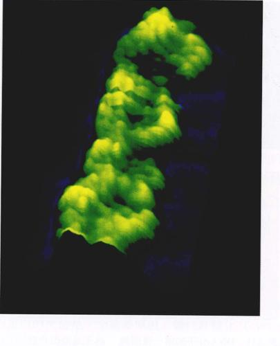
图 3.12 DNA 分子的扫描隧道显微图片 (假彩色，2000000 ×) 这张图片显示了 DNA 双链中大约 3 个螺旋（见图 3.15）。
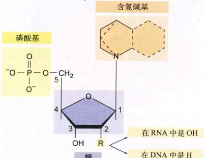
图 3.13 核苷酸分子的结构 DNA 和 RNA 的核苷酸单位由 3 部分组成：一个五碳糖；一个含氮的有机碱基；一个磷酸基。
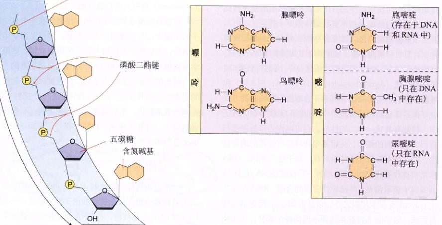
图 3.14 核酸及含氮有机碱基的结构 (a) 在核酸中，核苷酸由磷酸二酯键相连，而有机碱基则由链中伸出。(b) 含氮有机碱基可以是嘌呤或嘧啶，RNA 中的尿嘧啶在 DNA 中则由胸腺嘧啶所代替。
Page 13 / 原始页码 47
核苷酸中有两类有机碱基，第一类是嘌呤 (purine)，它的分子含有两个环，比较大，在 DNA 和 RNA 中都有，包括腺嘌呤 (adenine)(A) 和鸟嘌呤 (guanine)(G)；第二类是嘧啶 (pyrimidine)，它的分子小一些，是单环结构，包括胞嘧啶 (cytosine)(C，出现在 DNA 和 RNA 中)、胸腺嘧啶 (thymine)(T，只在 DNA 中出现) 和尿嘧啶 (uracil)(U，只在 RNA 中出现)。
3) DNA
在有机体内，蛋白质氨基酸序列信息是以 DNA 中核苷酸序列的形式编码的，这种编码信息的方怯，如同用字母的顺序决定一个句子的意思一样。在英语中，一个句子是由字母表中的 26 个字母按特定的顺序排列而成的；而 DNA 分子的编码，是由不同组合的 4 种核苷酸按特定的序列排列成的，比如 CGCTTACG。DNA 中储藏的信息被用于日常的新陈代谢中，并遗传给后代。
DNA 分子不像蛋白质那样，依靠单条链折叠成复杂的形状，它含有 2 条链，两条 DNA 单链互相缠绕，就像一条螺旋上升的楼梯的内外两面扶手，这样一种旋转的结构叫双螺旋 (double helix)。如果一个螺旋是由两条链互相缠绕而成，像在 DNA 分子中那样，我们称之为双螺旋。在 DNA 分子形成的旋梯中，每一个阶梯都是一对碱基，每一个碱基对都是由一条链上的碱基和另一条链上相对的碱基通过氢键互相吸引形成的，这些氢键是两条单链结合成双链的动力（图 3.15）。碱基配对规则十分严格：腺嘌呤只能和胸腺嘧啶（在 DNA 中）或尿嘧啶（在 RNA 中）结合，而胞嘧啶只能和鸟嘌呤结合。在碱基对中特异结合的碱基被称为与另一个碱基“互补” (complementary)。关于 DNA 更细节的结构及其在合成蛋白质过程中与 RNA 间的相互作用，我们将会在第 14 和 15 章中详述。
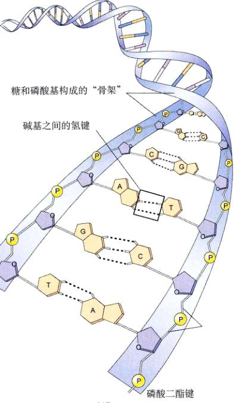
图 3.15 DNA 的结构 碱基间形成氢键（虚线所示），被称作碱基对，它使得 DNA 的两条链形成双螺旋结构。
4) RNA
RNA 和 DNA 很像，只有两点主要区别：第一，RNA 分子中的糖是核糖，二号碳上连接的是羟基；而在 DNA 中，这个羟基被一个氢原子取代。第二，RNA 中用尿嘧啶代替了胸腺嘧啶，尿嘧啶与胸腺嘧啶结构基本相同，前者仅仅比后者少了一个甲基。
DNA 上的信息被转录到另一个与化学性质不同的分子，如 RNA 上，这使得细胞能够区分什么是最初的信息储藏分子，什么是它的转录产物。DNA 总是以双链形式存在的（除了少数含有单链 DNA 分子的病毒，这些将在第 33 章中讨论），而从 DNA 转录而来的 RNA 分子主要是以单链形式存在（图 3.16）。虽然从化学角度而言，没有什么特殊的原因使得 RNA 分子无法形成像 DNA 那样的双链，但是细胞确实不含合成双链 RNA 所需的酶。这两中不同的分子，一个是单链而另一个是双链，划清了 DNA 与 RNA 的功能界限，即前者是储存遗传信息，而后用于这些信息来合成蛋白质。
5) 谁是先行者？DNA 还是 RNA
在细胞内，合成蛋白质所需的信息是储存在双链 DNA 的碱基序列中的，使用这些信息时，细胞首先合成它的 RNA 副本：RNA 的碱基和互补的 DNA 碱基配对。由于细胞将信息储藏在 DNA 中，并使用与之互补的 RNA 来指导蛋白质合成，这使得细胞避免了每一次使用这些信息时可能发生的导致突变的危险。因此，DNA 被认为是由 RNA 演化而来的，它是保存遗传信息
Page 14 / 原始页码 48
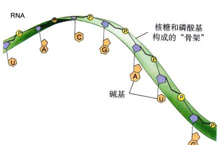
图 3.16 DNA 和 RNA DNA 是双链结构，在同样由磷酸构成的骨架中，DNA 中的糖是脱氧核糖，含氮碱基中用胸腺嘧啶；而 RNA 中的糖是核糖，用尿嘧啶代替了胸腺嘧啶。
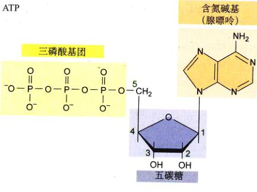
图 3.17 ATP 三磷酸腺苷 (ATP) 包括腺嘌呤，五碳糖和三个磷酸基。这个分子起着运送能量的作用，而非储存遗传信息。
的载体，可避免由于细胞活动而导致遗传信息的丧失。这种遗传体系从有生命开始，一直延续到人类。
细胞使用单链、短寿命的 RNA 副本本来指导有着特定氨基酸序列的蛋白质合成，即信息从 DNA 流向 RNA 再到蛋白质，这一过程在分子生物学中被成为“中心法则” (central dogma)。
6) ATP
除了作为 DNA 和 RNA 的组成单位，核苷酸在细胞活动的其他方面也起着决定性作用。例如腺嘌呤是三磷酸腺苷 (adenosine triphosphate) (ATP，图 3.17) 的关键组分，ATP 被称作细胞能量代谢中的通货。腺嘌呤也出现在烟酰胺腺嘌呤二核苷酸 (nicotinamide adenine dinucleotide, NAD⁺) 和黄素腺嘌呤二核苷酸 (flavin adenine dinucleotide, FAD⁺) 中，二者都是电子载体，这些电子的能量被用来合成 ATP。
3.4 脂类是细胞膜的主要成分，并且是储能分子
脂类有一个共同特征：不溶于水。最常见的脂类是油和脂肪。脂类含有许多非极性的碳氢键 (C—H)，所以长链脂类不能像蛋白质那样自动折叠，而将非极性的部分与水隔离开。相反地，当脂类被置于水中时，在多数情况下它们会自动聚集起来，将极性部分暴露于水中而使非极性部分包藏于内部。脂类的这种自动聚集的性质对细胞极其重要，因为它是细胞膜结构的基础。
3.4.1 磷脂构成膜
磷脂 (phospholipid) 是细胞内最重要的分子之一，它是所有细胞膜的核心成分。单个的磷脂分子由 3 部分构成：
- (1) 丙三醇（甘油, glycerol）：它是含有 3 个碳原子的醇，每个碳原子都有一个羟基。丙三醇形成了磷脂的骨架。
- (2) 脂肪酸：这是由碳氢键形成的长链分子（烃链），末端是羧基。在磷脂中，两个脂肪酸与丙三醇的骨架相结合。
- (3) 磷酸基：它与丙三醇端部的一个碳相连，带有电荷，通常带有电的有机分子与之相连，如胆碱、胆胺或丝氨酸。
Page 15 / 原始页码 49
磷脂分子可以被理解为一端是极性的头（磷酸基），另一端是两条非极性很强的尾端。在水中，临近的磷脂会聚集起来形成双层膜，非极性的尾彼此相对(图 3.18)。脂双层是生物膜的基本骨架，这些将在第6章详细讨论。
3.4.2 脂肪和其他脂类
脂肪 (fat) 是一种脂类，与磷脂不同的是，脂肪分子没有极性末端。中性脂肪的骨架仍是丙三醇，3 个脂肪酸与丙三醇的 3 个碳一一相连。由于它含有 3 个脂肪酸，中性脂肪分子被称作甘油三酯 (triglyceride)，更确切地说是三酰甘油 (triacylglycerol)（图 3.19）。组成三酰甘油的 3 个脂肪酸并不一定相同，通常彼此间有很大不同。生物体利用中性脂肪的碳氢键来长时间储存能量。
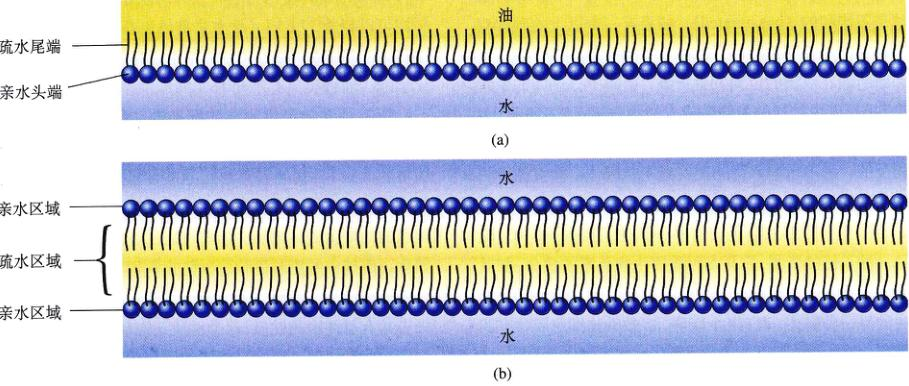
图 3.18 磷脂 (a) 在油和水的分界面上，磷脂分子有确定的指向，它们的极性（亲水）部分在极性的溶剂水中，而非极性（疏水）部分在非极性的溶剂（油）中。(b) 当完全被水包围时，磷脂分子会形成双层膜，将头指向水中，尾端隐藏在膜内。
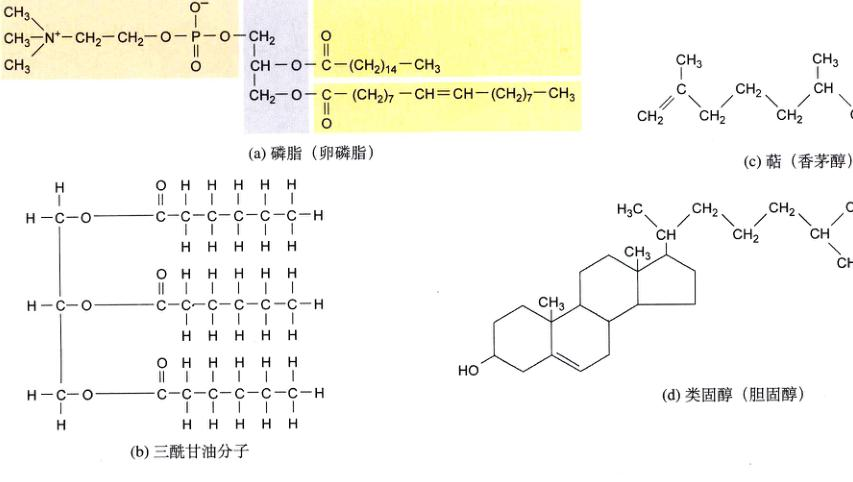
图 3.19 脂类 这里展示了 4 种对生物体有着重要意义的脂类：(a) 磷脂；(b) 三酰甘油（甘油三酯）；(c) 萜（香茅醇）；(d) 类固醇（胆固醇）。
Page 16 / 原始页码 50
由于三酰甘油缺少一个极性端，所以它们不溶于水，置于水中时它们会自动聚集成一个脂滴，这个脂滴通常比单个的分子大很多。由于脂肪不溶于水，它们可以被储存在生物体的某些特定位置。
储藏能量的中性脂肪是脂类的一种。油，比如橄榄油、玉米油和椰子油，以及蜡，比如蜜蜂蜡和耳垢，都是脂类。脂肪酸的烃链长短各不相同，最普遍的情况是介于 14 和 20 之间的偶数。如果链内部的每一个碳原子都与两个氢原子相连，这样的脂肪酸是饱和的 (saturated)，因为它含的氢达到了理论上的最大值（图 3.20）；如果一个脂肪酸含有一个或多个碳碳双键，它就是不饱和的 (unsaturated)。由于多不饱和脂肪酸在双键的位置发生折叠，阻碍了分子间的紧密排列，所以由这样的脂肪酸形成的脂肪熔点低。因此，多不饱和脂肪，如玉米油，在室温下通常是液体，称为油。相反的，大多数饱和脂肪在室温下是固体，像黄油里的脂肪那样。
除了脂肪，生物体还含有多种其他脂类（图 3.19）。萜是一种长链的脂类，它是多种重要色素的成分，如叶绿素和视黄醛，橡胶也是一种萜。类固醇 (steroid) 是膜中的另一种脂类，含有 4 个碳环，多数动物细胞膜含有胆固醇 (cholesterol)；另一些类固醇，比如睾酮 (testosterone) 和雌激素，在多细胞生物体内充当激素。前列腺素是包含大约 20 种脂类的一组物质，它们是由经过修饰的含有两个非极性尾端的脂肪酸与一个五碳环相连而成，前列腺素在很多脊椎动物组织间充当化学信使。
3.4.3 食用脂肪
多数脂肪含有超过 40 个的碳原子。脂肪中碳原子形成的 C—H 键储存能量的效率是糖类中的 2 倍（见下一节），这使得脂肪成为更加高效的储能分子。1g 脂肪分子平均可以释放 37.6 kJ（原书采用的能量单位是 kcal，本书译文采用国际单位，统一将千卡换算为 kJ。校者注）的化学能，而糖类只有不到 16.72 kJ。
所有由动物提供的脂肪都是饱和的（一些鱼油例外），而绝大多数植物油是不饱和的，除了一些产自热带植物的油脂（棕榈油和椰油），这些油虽然在室温下是可以流动的，它们却是饱和的。通过加氢，我们可以将不饱和的油变为固体的脂。店里出售的花生酱通常被人工氢化，使其中的脂肪固化，以防止它们在储存过程中从酱中分离出来。然而，人为地给不饱和脂肪加氢会使它失去其有益健康的性质，这个性质是饱和脂肪所没有的，这样的处理使得二者含有相同量的碳氢单键。因此，相对黄油来说，由玉米油加氢而来的油脂并不对你的健康更有益。
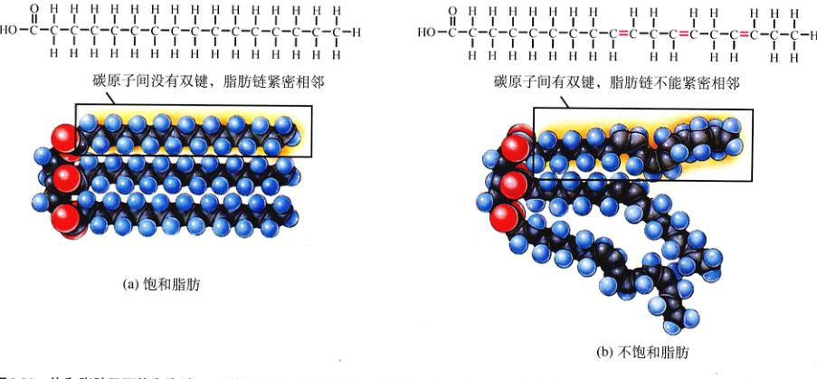
图 3.20 饱和脂肪及不饱和脂肪 (a) 棕榈油不含碳碳双键，因此碳链上有最大数目的氢原子，这是一种饱和脂肪，许多动物的三酰甘油（脂肪）是饱和的。由于饱和脂肪酸链紧密相邻，这些三酰甘油形成不流动的形态，也叫硬脂。(b) 亚油酸含有双键，也就含有了理论比上的最大值少的氢原子，这是一种不饱和脂肪酸。植物脂肪是标准的不饱和脂肪，碳链上的双键引起的纽结使得三酰甘油无法紧密排列，其结果就是形成了室温下呈液态的油。
Page 17 / 原始页码 51
当机体摄入了过多的糖类时，它们就会被转化为淀粉、糖原或脂肪以备不时之需。人类老时容易发胖，是因为他们所需的能量减少了，而进食却不变，所以他们多吃的那一部分糖被转化为脂肪。
高脂饮食被认为是诱发心脏病的众多原因之一，特别是动脉粥样硬化 (atherosclerosis)，这种病的病因是：被称为作动脉粥样斑的脂肪组织沉积在血管壁上，从而阻塞了血液的流动，而从沉积物上剥离下来的碎片则成为中风的主要原因。
3.5 糖类储存能量，并提供构建生命体的材料
3.5.1 简单的糖类
糖类 (carbohydrate) 既是储能分子，又是建造生物体的材料。有些分子小而简单，有些则是长链的聚合物。
1) 单糖是简单的糖类
糖类 (carbohydrate) 是一类定义广泛的分子，它们含有碳、氢和氧，物质的量比为 1:2:1，它们的经验分子式（将分子中的原子列出，并用下标标出它们各自的数目）为 (CH₂O)n，其中的 n 表示碳原子数。由于含有大量的碳氢键，而碳氢键断裂时可以释放能量，所以糖类适于储备能量。
糖类中最简单的是单糖 (monosaccharide，希腊语中 mono 是“单”的意思，再加上拉丁文中的“糖” saccbarum)，单糖最少可以仅含有 3 个碳原子，但是那些在能量储备中起着中心作用的糖含有 6 个碳原子（图 3.21）。六碳糖的经验分子式是：C₆H₁₂O₆ 或 (CH₂O)₆。
六碳糖可以直接的形式存在，但在水溶液中它们总是形成环状。能量储备中最重要的糖是葡萄糖（图 3.22），这是一种六碳糖，它有 7 个可储存能量的碳氢键。
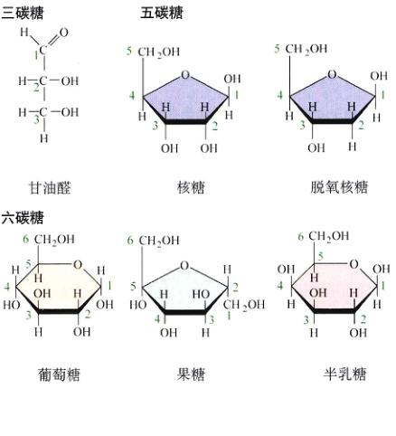
图 3.21 单糖 单糖最少含有 3 个碳原子，常常是构成大分子的基本原料。五碳糖核糖及脱氧核糖是核酸的成分（见图 3.16）。六碳糖葡萄糖则是一些大的储能分子的组分。
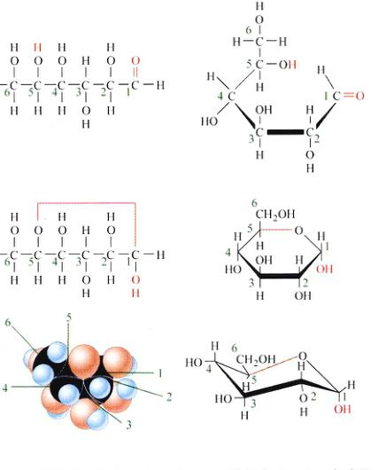
图 3.22 葡萄糖的结构 葡萄糖是一种链状分子，含 6 个碳原子，在水中则形成环状。环的结构可以用多种方法表示出来，这里用的是一些最普遍使用的方法，并标出了各个碳原子习惯上的编号（绿色），以便比较。那些粗的深色线条表示分子中伸出纸面向读者的部分，值得注意的是，这里都有着三维结构的分子。
2) 双糖
许多常见的糖类，如蔗糖 (sucrose)，都是双糖
Page 18 / 原始页码 52
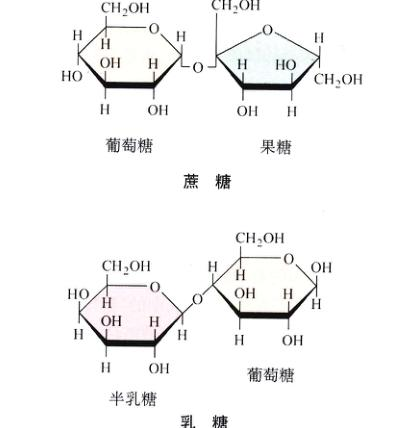
图 3.23 双糖 糖类中的蔗糖和乳糖都是双糖，它们是由两个单糖通过共价键相连而成。
(disaccharide)，由两个单糖通过共价键结合而成（图 3.23）。它们在糖的运输过程中发挥重要作用，这一点我们很快就会谈到。
3) 多糖
多糖 (polysaccharide) 是由许多单糖构成的大分子。淀粉是植物用于储存能量的一种多糖，它完全是由葡萄糖分子逐个依次相连而成。纤维素则是植物体内起着结构作用的多糖，它同样是完全由葡萄糖构成的长链，切断这些连接需要特殊的酶。
4) 糖的异构体
葡萄糖并不是拥有的 C₆H₁₂O₆ 化学式的惟一糖，其他常见的糖，像果糖 (fructose) 和半乳糖 (galactose) 也有一样的经验分子式（图 3.24）。这些糖被称作葡萄糖的异构体 (isomer)。虽然异构体拥有相同的分子式，但它们的原子以不同的方式排列，也就是说明它们的三维结构不同。如葡萄糖和果糖是结构异构体。对于果糖，氧原子的两个价键都是与内部的碳原子相连，而与像在葡萄糖里那样，其中一个与碳链末端的碳原子相连。虽然它们拥有相同的化学组成，你的味蕾仍可以分辨出这个差异，果糖比葡萄糖甜得多。这种结构上的差别同样引起了化学性质的差异，它们形成不同的聚合体。
与果糖不同，半乳糖与葡萄糖有相同的碳链结构，惟一的差别是一个羟基的方向不同。由于羟基的位置互为镜像，葡萄糖和半乳糖被称为立体异构体。同样，这一个看似微细的差别引起了截然不同的后果，因为在形成多糖分子的聚合物理，羟基起着重要作用，例如淀粉是储存能量的，而纤维素是起着支持作用。
3.5.2 糖的连接
1) 双糖的转运
绝大多数生物需要在体内运送糖，对人而言，葡萄糖就是以简单的单糖形式在血液中运送，而在植物和许多其他生物体内，葡萄糖在被运送远之前会被转化为转运形式，以减少在运送过程中的代谢损耗（放出能量）。
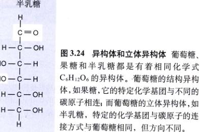
图 3.24 异构体和立体异构体 葡萄糖、果糖和半乳糖都是有着相同化学式 C₆H₁₂O₆ 的异构体。葡萄糖的结构异构体，果糖，它的特定化学基团与不同的碳原子相连；而葡萄糖的立体异构体，如半乳糖，特定的化学基团与碳原子的连接方式与葡萄糖相同，但方向不同。
Page 19 / 原始页码 53
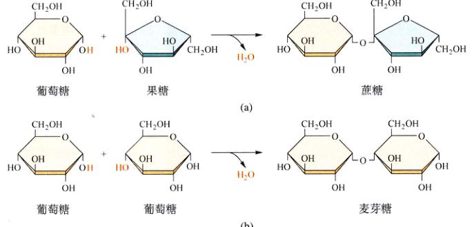
图 3.25 双糖是如何形成的 一些双糖在生物体内被用于葡萄糖的运送。(a) 蔗糖，甘蔗中含有蔗糖。(b) 谷物中的麦芽糖，用于储备能量。
糖的运输形式，通常是由两个单糖连接成一个双糖 (disaccharide 中的 di 在希腊语中是“二”的意思)。双糖是葡萄糖在转运过程中一种有效的保藏形式，因为生物体内与葡萄糖利用有关的普通酶，不能打开连接两个单糖单位的共价键，只有那些需要葡萄糖的地方，才存在有此功能的酶。
双糖以何种形式运输是由形成它们的单糖决定的。葡萄糖可以和它本身或其他单糖相连，包括果糖和半乳糖。当葡萄糖和它的异构体果糖形成二糖时，其产物是蔗糖（图 3.25a）。蔗糖是大多数植物运输葡萄糖的形式，也是多数人及动物的食用糖，甘蔗和甜菜都富含蔗糖。
葡萄糖与它的异构体半乳糖相连，形成乳糖 (lactose)，许多哺乳动物以乳糖的形式为后代提供能量。乳糖酶可以将乳糖分解成两个单糖，成年人体内的乳糖酶大大减少，这使得他们不能有效地进行乳糖代谢，这样储存在乳糖中的能量就可以提供给后代。
2) 多糖的储存
生物体储存单糖中能量的方法是：将单糖转化为双糖（如麦芽糖，图 3.25b），接着双糖彼此连接起来，成为不溶水的形式，并在体内的特定部位贮存下来，这些不溶的多糖都是由单糖通过脱水反应连接而成的聚合物。植物体内由葡萄糖形成的淀粉 (starch)，以微粒的形式储存在叶绿体等细胞器内。由于葡萄糖是关键的供能物质，淀粉就成为一种很好的
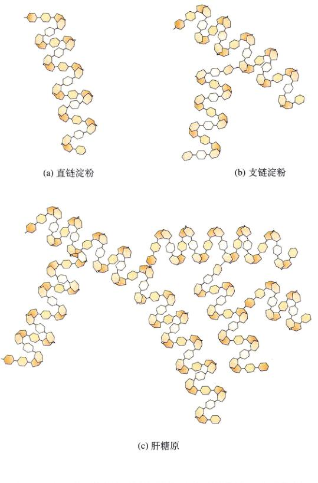
图 3.26 用于储备的多糖 淀粉是植物用于储存能量的葡萄糖的聚合体。(a) 最简单的淀粉——直链淀粉是长链的麦芽糖，它会在水中自动卷曲。(b) 大多数植物含有复杂的支链淀粉。(c) 动物以糖原的形式储存葡萄糖，它比支链淀粉分叉更多并含有更长的支链。
Page 20 / 原始页码 54
储存能量的分子。通过将连接葡萄糖的化学键水解，细胞可以重新获得活动所需的能量。
结构最简单的淀粉是直链淀粉 (amylose)，它是由几万个葡萄糖分子连成的长而分叉的长链。每个连接在一个葡萄糖的 1 号碳和另一个葡萄糖的 4 号碳之间，故直链淀粉实际上是麦芽糖的一种长链形式。直链淀粉的长链在水中有卷曲的趋势（图 3.26a），这使其溶于水。马铃薯含有 20% 的直链淀粉，当直链淀粉被正在发芽的马铃薯（或是吃进马铃薯的动物）分解，酶首先将其切成随机的长度，由于变得短了，它更易溶于水。烘烤或是水煮马铃薯也同样能将长链切刻成碎片，另一种酶将这些碎片切成麦芽糖分子，最终麦芽糖分子被切成葡萄糖以供细胞代谢。
大多数植物淀粉，包括马铃薯中剩余的 80% 淀粉，是一种较直链淀粉复杂的支链淀粉 (amylopectin)（图 3.26b）。果胶 (pectin) 是一种多支链的淀粉。支链淀粉含有短的像直链淀粉的分叉，通常含有 20 至 30 个葡萄糖单体。
在某些植物中，这些分支之间发生交叉连接，形成了一个不溶于水的网状结构，它仅仅能被另一种酶分解。网的大小取决于植物的种类，对大米而言，大约有 100 个直链淀粉的分支，每个分支与其他一两个分支交叉又而成网状。
在动物体内，与淀粉对应的是糖原 (glycogen)，与支链淀粉相似，糖原是一种含有直链淀粉分支的多糖，在糖原中，支链的平均长度比淀粉更大，分叉也更多（图 3.26c）。人类和其他的脊椎动物，以糖原的形式在肝脏和肌肉中储存从食物中摄取的多余能量，当组织对能量的需求增加时，糖原被水解并释放出葡萄糖。
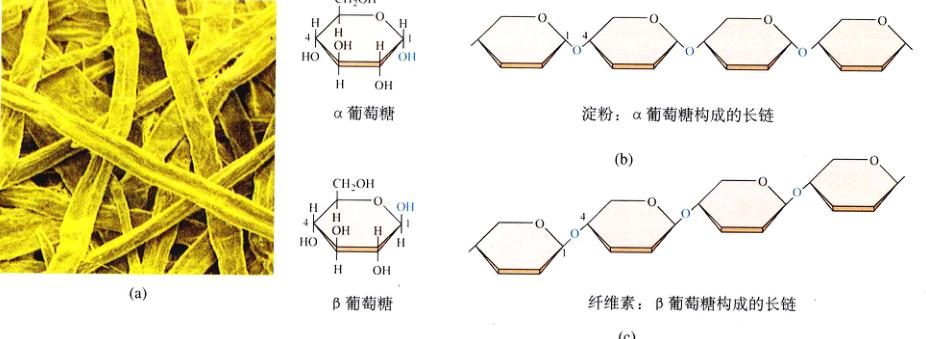
图 3.27 木质 (a) 这些杂乱的纤维素丝采自西黄松 (Pinus ponderosa) (20 ×)；(b) 淀粉含有 α 葡萄糖；(c) 纤维素含有 β 葡萄糖。纤维素形成的长纤维，并且不易被分解，这也是木材成为一种很好建筑材料的原因。
Page 21 / 原始页码 55
3.5.3 结构糖
一些糖起着储能的作用，而另一些则是细胞的建筑材料。
1) 纤维素
两个相连的葡萄糖糖必须是相同的形式。它们可以以两种方式形成环式，区别就在于连成环的那个碳原子上羟基的位置，它可能在环面的上部或下部，如果在下部，就是 α 型，反之则是 β 型。构成淀粉的所有葡萄糖单体都是 α 葡萄糖，如果一个多糖分子包含的所有葡萄糖单体都是 β 型葡萄糖，它将具有完全不同的性质，这种结构多糖 (structural polysaccharide) 是纤维素 (cellulose)，它是植物细胞壁的主要成分（图 3.27）。纤维素在化学性质上与直链淀粉相似，但有一点不同：大多数生物体内的那些分解淀粉的酶不能破坏两个 β 葡萄糖间的共价键，这并非因为这个化学键更稳定，而是因为大多数生物体内没有破坏它所需的酶。由于纤维素不易分解，它是生物体的一种很好的建造材料，并且广泛的存在于植物中，它也成为少数动物丰富的能量来源，只有它们能够分解纤维素。一些脊椎动物（如牛）之所以可以分解纤维素，依靠的是它们肠道内的细菌和原生动物，这些生物提供了分解纤维素必需的酶。
2) 壳多糖
昆虫、真菌和其他一些生物体内含有另一种起着结构作用的物质——壳多糖 (chitin)，也称几丁质（图 3.28）。将一个含氮的基团加到葡萄糖上，就可以将纤维素修饰成壳多糖。当它与蛋白质交联时，就会形成一种坚韧的物质，构成节肢动物（如昆虫和甲壳纲）的外骨骼（见第 46 章）。极少数的生物能够消化壳多糖。
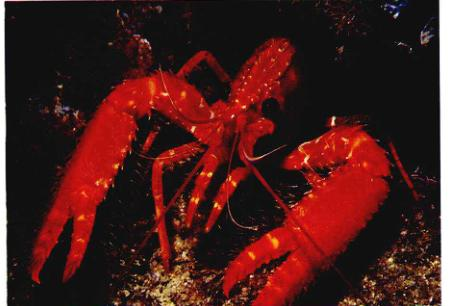
图 3.28 壳多糖 壳多糖可以看作是由纤维素分子经过修饰形成的，它是许多无脊椎动物（如龙虾）的外骨骼的主要成分。
Page 22 / 原始页码 56
小 结
3.1 生物体由分子构成
- 生命系统的化学是含碳物质的化学。
- 碳原子的独特化学性质使之可以通过脱水聚合成长链，形成生物体内最重要的 4 种大分子：蛋白质、核酸、糖类、脂类。
3.2 细胞的化学功能由蛋白质实现
- 蛋白质是氨基酸的聚合体。
- 由于 20 种氨基酸的侧链有不同的化学性质，蛋白质的构形和功能由它特定的氨基酸序列决定。
3.3 核酸储存并传递遗传信息
- 遗传信息储存在被称为 DNA 的线性核苷酸多聚体的序列中，它在细胞内以双螺旋形式存在。
- 通过产生一个与 DNA 互补的单链的 RNA，细胞用它来指导蛋白质的合成。氨基酸的序列与 RNA 的核苷酸排列对应，RNA 则是由于 DNA 转录而来。
3.4 脂类是细胞膜的主要成分，并且是储能分子
- 脂肪是一种不溶于水的脂类。
- 脂肪分子含有许多富含能量的碳氢键，因此是一种很好的长期储能物质。
- 脂类包括磷脂、脂肪、萜、类固醇和前列腺素。
3.5 糖类储存能量，并提供构建生命体的材料
- 糖类在它们的碳氢键中储存了相当多的能量。
- 新陈代谢中最重要的糖类是葡萄糖，它是一种六碳糖。
- 多余的能量可能被储存在复杂的糖聚合体中，对植物而言是淀粉，对动物和真菌来说是糖原。
问 题
- 哪些分子是由脱水反应生成的，哪些是由水解反应生成的？
- 氨基酸如何连接成蛋白质？
- 什么是蛋白质的一级、二级、三级和四级结构？
- 核苷酸是由哪 3 部分组成？核苷酸如何连接成为核酸？
- 哪些嘧啶和嘌呤可以彼此配对？
- 你能想出哪些可行的方案，按机体构成层次来组织初生的知识体系？
- 脂肪分子是由哪两部分构成？如何构成？
- 葡萄糖、果糖和半乳糖是异构体是什么意思？哪两个是结构异构体，哪两个是立体异构体？它们有什么区别？
媒体资源
- 有机化学
- 探索：蛋白质的功能
- 蛋白质
- 核酸
- 技能测验：DNA 碱基配对和氢键
- 脂类
- 科学家如何思考：氨基酸序列决定蛋白质的结构
- 糖类
- 技能测验：二糖